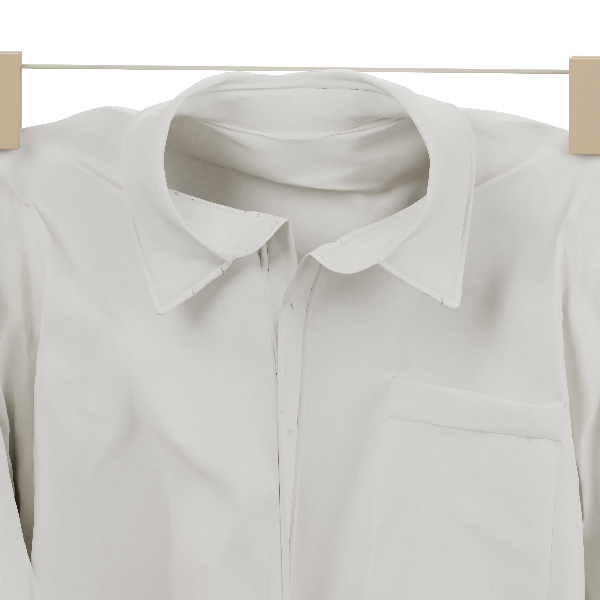
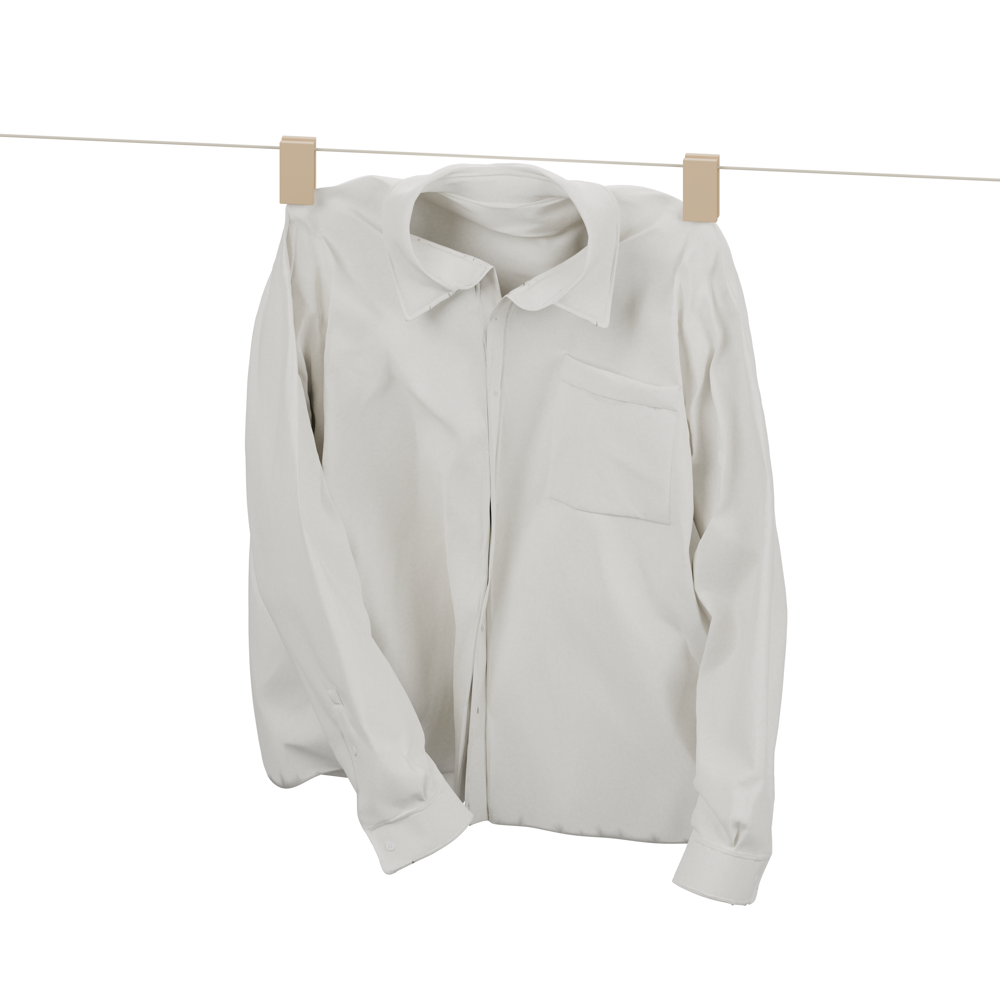

Drag to turn · scroll to zoom
Loading the garment…
0.0 / 12.0 s
Raw silk,
in motion.
A shirt on the line / interactive study
- Fabric reference
- Undyed silk noil
- Color
- Natural ivory
- Support
- Two shoulder clips
- Buttons
- Six front fasteners
A soft, irregular surface that catches the light as the cloth moves. Explore how fastening changes the way the shirt opens, folds, and responds to wind.
Button numbering excludes the collar. Cuffs stay fastened; the collar stays open. Wind speeds are approximate.
A closer look.
Path-traced studies · open for 4K
